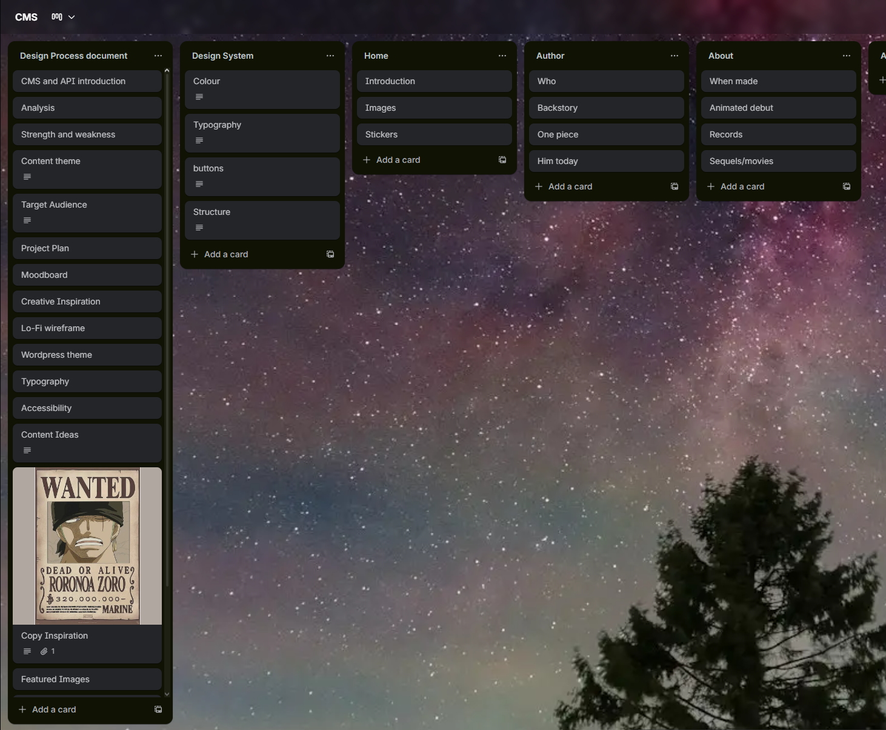

One Piece Blog
A personal blog on my favourite fiction, built with WordPress & Elementor.

Overview
Problem
A personal project on my favourite fiction, built on WordPress & Elementor. This was my first attempt at utilising WordPress.
Solution
After understanding how WordPress worked, I looked around different templates. One template that stood out to me was the Twenty Twenty-Four. The minimalistic, sleek yet expressive design, in its own way, captivated me almost immediately.
Impact
This was a very good practice and a learning experience in a different method of building websites outside coding from scratch using HTML, CSS and JavaScript.
Process
Research
I first begun researching other biography websites using WordPress. This allowed me to understand the most common template for the type of website I want to create.
Ideation
I then moved on to creating moodboards and brainstorming possible ideas I came up with and ideas I stumbled across from others. I noted everything I needed to do on Trello which allowed me to be punctual in my own deliveries.
Design
I started off implementing my design system and styleguide as it seemed the most logical. A couple of ideas started to flow to me during the development which made me revisit if it was possible with the limitations of WordPress.
Testing
Once finished, I had a UX friend of mine test it thoroughly. This included them changing images, fonts, colours etc. I was able to receive quality feedback on what went well and what could be improved.
Early wireframes


Final Design